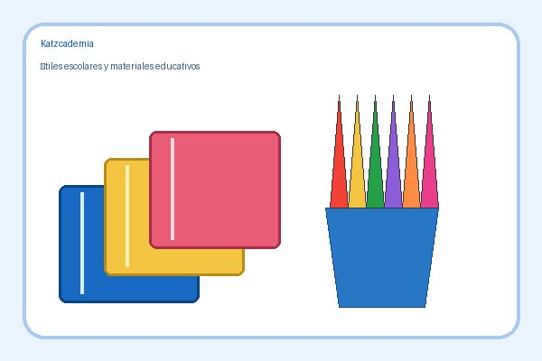

En Katzcademia ofrecemos materiales para estudiar, escribir, crear y organizar las actividades escolares.
Productos disponibles
Cuadernos para apuntes, tareas y ejercicios.
Lápices y bolígrafos para escribir y realizar actividades.
Mochilas para transportar libros y útiles escolares.
Tabla de precios referenciales
Lista de precios de Katzcademia
Producto
Imagen
Precio (USD)
Cuadernos

$2.50
Lápices y bolígrafos
$4.00
Mochilas
$18.00
Horario de atención
Horario de atención de Katzcademia
Día
Horario
Servicio
Lunes a viernes
8:00 a. m. – 12:00 p. m.
Venta de útiles y asesoría educativa
2:00 p. m. – 6:00 p. m.
Sábado
9:00 a. m. – 1:00 p. m.
Venta de útiles
Domingo
Cerrado
Imágenes de Katzcademia
Formato: JPG. Se eligió porque representa bien imágenes con muchos colores y permite comprimir el archivo.
Formato: PNG. Se eligió porque admite transparencia y mantiene nítidos los bordes del logotipo. Esta imagen funciona como enlace hacia la página de inicio.
Lista de precios en PDF
Pasos para hacer un pedido
Revisar los productos del catálogo.
Anotar el nombre del producto que interesa.
Escribir a Katzcademia por correo para consultar disponibilidad.
Glosario de términos
Cuaderno
Conjunto de hojas unidas que se utiliza para escribir apuntes y tareas.
Papelería
Materiales y artículos utilizados para escribir, dibujar o trabajar en documentos.
Útil escolar
Objeto que ayuda al estudiante a realizar sus actividades académicas.